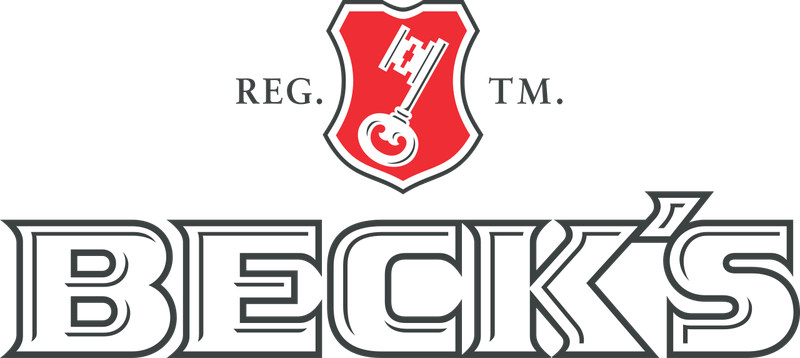
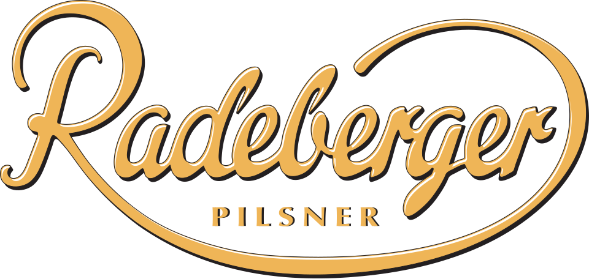
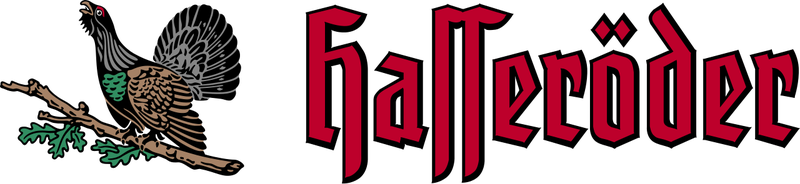
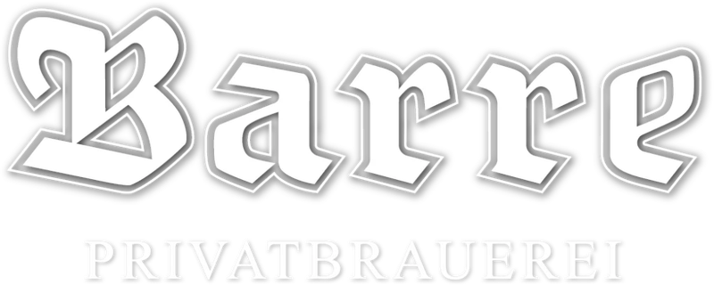

독일 맥주 브랜드 53
독일에서 시작된 맥주 브랜드 53개를 로고와 함께 정리했습니다. 대표적인 독일 맥주 브랜드로는 뢰벤브로이(Löwenbräu Brewery), 바이엔슈테판 양조장(Bavarian State Brewery Weihenstephan), 크롬바커 바이젠(Krombacher Brauerei), 에르딩거(Erdinger), 벡스(Beck's), 비트부르거(Bitburger brewery) 등이 있습니다. 기원 국가는 검수된 브랜드 설명이나 위키데이터 개체에서 확인된 값만 씁니다.
다른 나라 맥주 브랜드
맥주 브랜드 전체 →설립연도가 확인된 브랜드는 28개이며 가장 오래된 곳은 1803년, 가장 최근은 1997년에 시작했습니다. 시기별로는 1900년 이전 23개, 1900~1949년 3개, 1950~1999년 2개입니다. 수록 자료로는 로고 이미지 53개를 갖췄습니다. 이 가운데 53개는 공식 웹사이트가 일치하는 위키데이터 개체로 연결해 두었습니다.
독일 맥주 브랜드 한눈에 보기
- 뢰벤브로이(Löwenbräu Brewery) — 뢰벤브로이(Löwenbräu Brewery)는 독일 뮌헨에 있는 맥주 양조장이다.
- 바이엔슈테판 양조장(Bavarian State Brewery Weihenstephan) — 바이엔슈테판 양조장(Bavarian State Brewery Weihenstephan)은 독일 바이에른 자유주가 소유한 국영 양조장으로, 프라이징에 있는 옛 바이엔슈테판 수도원 부지에 자리하고 있다.
- 크롬바커 바이젠(Krombacher Brauerei) — 크롬바커 바이젠(Krombacher Brauerei)은 독일 Kreuztal에 본사를 둔 양조회사이다.
- 에르딩거(Erdinger) — 에르딩거(Erdinger)는 독일 에르딩에 본사를 둔 양조장이자 그 맥주 브랜드이다.
- 벡스(Beck's) — 벡스(Beck's)는 독일 브레멘에 본사를 둔 맥주 브랜드이다.
- 비트부르거(Bitburger brewery) — 비트부르거(Bitburger brewery)는 독일 라인란트팔츠주 Bitburg에 있는 대형 양조장이다.
- 호프브로이하우스(Staatliches Hofbräuhaus in München) — 호프브로이하우스(Staatliches Hofbräuhaus in München)는 1589년 빌헬름 5세 공작이 세운 독일 뮌헨의 맥주 양조장이자 대형 술집이다.
- 외팅어(Oettinger Brewery) — 외팅어(Oettinger Brewery)는 독일의 양조 그룹이다.
- 바르슈타이너(Warsteiner) — 바르슈타이너(Warsteiner)는 독일 노르트라인베스트팔렌주 바르슈타인에서 양조되는 독일 맥주 브랜드이다.
- Hacker-Pschorr Brewery — Hacker-Pschorr Brewery는 독일 뮌헨에 본사를 둔 양조장이다.
- Aldersbach brewery — Aldersbach brewery는 독일 바이에른 니더바이에른의 Aldersbach에 있는 중규모 전통 양조장이다.
- Radeberger Brewery — Radeberger Brewery는 독일 Radeberg에 본사를 둔 맥주 양조장이다.
독일 맥주 브랜드 목록
 크롬바커 바이젠Krombacher Brauerei독일 · 1803년
크롬바커 바이젠Krombacher Brauerei독일 · 1803년크롬바커 바이젠(Krombacher Brauerei)은 독일 Kreuztal에 본사를 둔 양조회사이다.
 에르딩거Erdinger독일 · 1886년
에르딩거Erdinger독일 · 1886년에르딩거(Erdinger)는 독일 에르딩에 본사를 둔 양조장이자 그 맥주 브랜드이다.

벡스Beck's독일 · 1873년벡스(Beck's)는 독일 브레멘에 본사를 둔 맥주 브랜드이다.
 비트부르거Bitburger brewery독일 · 1817년
비트부르거Bitburger brewery독일 · 1817년비트부르거(Bitburger brewery)는 독일 라인란트팔츠주 Bitburg에 있는 대형 양조장이다.
 호프브로이하우스Staatliches Hofbräuhaus in München독일
호프브로이하우스Staatliches Hofbräuhaus in München독일호프브로이하우스(Staatliches Hofbräuhaus in München)는 1589년 빌헬름 5세 공작이 세운 독일 뮌헨의 맥주…
 외팅어Oettinger Brewery독일
외팅어Oettinger Brewery독일외팅어(Oettinger Brewery)는 독일의 양조 그룹이다.
 뢰벤브로이Löwenbräu Brewery독일
뢰벤브로이Löwenbräu Brewery독일뢰벤브로이(Löwenbräu Brewery)는 독일 뮌헨에 있는 맥주 양조장이다.
 바이엔슈테판 양조장Bavarian State Brewery Weihenstephan독일
바이엔슈테판 양조장Bavarian State Brewery Weihenstephan독일바이엔슈테판 양조장(Bavarian State Brewery Weihenstephan)은 독일 바이에른 자유주가 소유한 국영 양조장으로,…
 바르슈타이너Warsteiner독일
바르슈타이너Warsteiner독일바르슈타이너(Warsteiner)는 독일 노르트라인베스트팔렌주 바르슈타인에서 양조되는 독일 맥주 브랜드이다.
 Hacker-Pschorr Brewery독일
Hacker-Pschorr Brewery독일Hacker-Pschorr Brewery는 독일 뮌헨에 본사를 둔 양조장이다.
 Aldersbach brewery독일
Aldersbach brewery독일Aldersbach brewery는 독일 바이에른 니더바이에른의 Aldersbach에 있는 중규모 전통 양조장이다.

Radeberger Brewery독일 · 1872년Radeberger Brewery는 독일 Radeberg에 본사를 둔 맥주 양조장이다.
 König Brauerei독일 · 1858년
König Brauerei독일 · 1858년König Brauerei는 독일 뒤스부르크의 Beeck 지구에 있는 양조장이다.
 Flensburger Brauerei독일 · 1888년
Flensburger Brauerei독일 · 1888년Flensburger Brauerei는 독일 Schleswig-Holstein주의 플렌스부르크에 있는 양조장이다.
 G. Schneider & Sohn독일 · 1872년
G. Schneider & Sohn독일 · 1872년G. Schneider & Sohn은 독일 바이에른에 있는 바이스비어(밀맥주) 양조회사이다.
 Spaten-Franziskaner-Bräu독일 · 1997년
Spaten-Franziskaner-Bräu독일 · 1997년Spaten-Franziskaner-Bräu는 독일 바이에른의 뮌헨에 본사를 둔 양조회사이다.
 Dortmunder Actien Brauerei독일 · 1868년
Dortmunder Actien Brauerei독일 · 1868년Dortmunder Actien Brauerei는 독일 도르트문트에 있는 양조장이다.
 Holsten Brewery독일 · 1879년
Holsten Brewery독일 · 1879년Holsten Brewery는 1879년 지금의 함부르크 Altona-Nord 지구에서 설립된 독일의 양조 회사이다.
 Radeberger Group독일 · 1952년
Radeberger Group독일 · 1952년Radeberger Group은 독일 프랑크푸르트암마인에 본사를 둔 독일 최대 양조 그룹이다.
 Spatenbräu독일
Spatenbräu독일Spatenbräu는 독일 뮌헨에 본사를 둔 양조장이다.
 Distelhäuser Brewery독일 · 1811년
Distelhäuser Brewery독일 · 1811년Distelhäuser Brewery는 독일 Tauber Franconia 지역의 Tauberbischofsheim 구역인…
 Diebels독일 · 1878년
Diebels독일 · 1878년Diebels는 독일 Issum에 본사를 둔 맥주 브랜드이다.
 Paderborner Brauerei독일 · 1852년
Paderborner Brauerei독일 · 1852년Paderborner Brauerei는 독일 도시 파더보른에 있는 양조장이다.
 Störtebeker Braumanufaktur독일 · 1827년
Störtebeker Braumanufaktur독일 · 1827년Störtebeker Braumanufaktur는 독일 슈트랄준트에 본사를 둔 양조장이다.
 Herzoglich Bayerisches Brauhaus Tegernsee독일
Herzoglich Bayerisches Brauhaus Tegernsee독일Herzoglich Bayerisches Brauhaus Tegernsee는 독일 바이에른의 Tegernsee에 있는 양조장이다.
 Privatbrauerei Wittingen독일
Privatbrauerei Wittingen독일Privatbrauerei Wittingen은 독일 니더작센주의 Wittingen에 본사를 둔 양조회사이다.
 Augustiner Bräu독일
Augustiner Bräu독일Augustiner Bräu는 독일 뮌헨에 본사를 둔 양조장이다.
 Veltins Brewery독일 · 1824년
Veltins Brewery독일 · 1824년Veltins Brewery는 독일 서부 도시 Meschede-Grevenstein에 있는 양조장으로, 1824년에 문을 열었다.
 Cölner Hofbräu Früh독일 · 1904년
Cölner Hofbräu Früh독일 · 1904년Cölner Hofbräu Früh는 1904년 독일 쾰른에서 설립된 민영 양조장이다.
 König Ludwig Schlossbrauerei독일 · 1871년
König Ludwig Schlossbrauerei독일 · 1871년König Ludwig Schlossbrauerei는 독일 어퍼바이에른의 퓌르슈텐펠트브루크에 있는 양조장이다.
 Aktienbrauerei Kaufbeuren독일
Aktienbrauerei Kaufbeuren독일Aktienbrauerei Kaufbeuren은 독일 카우프보이렌에 본사를 둔 양조장이다.

Hasseröder독일 · 1872년Hasseröder는 독일 작센안할트주 베르니게로데에 있는 양조장이자 맥주 브랜드이다.
 Brauerei Gold Ochsen독일
Brauerei Gold Ochsen독일Brauerei Gold Ochsen은 독일 울름에 본사를 둔 양조장이다.

Ernst Barre Private Brewery독일 · 1842년Ernst Barre Private Brewery(독일어: Privatbrauerei Ernst Barre GmbH)는 독일 동베스트팔렌의…
 Jever Brewery독일
Jever Brewery독일Jever Brewery는 독일의 맥주 브랜드 Jever를 만드는 양조장이다.
 Schlenkerla독일
Schlenkerla독일Schlenkerla는 독일 바이에른 북부 프랑켄 지방의 도시 밤베르크에 있는 역사적인 브루펍이다.
 Binding-Brauerei독일 · 1870년
Binding-Brauerei독일 · 1870년Binding-Brauerei는 독일 프랑크푸르트암마인에 본사를 둔 양조회사이다.
 Dortmund U-Tower독일 · 1927년
Dortmund U-Tower독일 · 1927년Dortmund U-Tower는 독일 도르트문트에 있는 옛 양조장 건물이다.
 Klosterbrauerei Andechs독일
Klosterbrauerei Andechs독일Klosterbrauerei Andechs는 독일 오버바이에른의 Andechs에 있는 수도원 양조장이다.
 Rothaus독일
Rothaus독일Rothaus는 독일 바덴뷔르템베르크주가 소유한 양조장이다.
 Gaffel Becker & Co독일 · 1908년
Gaffel Becker & Co독일 · 1908년Gaffel Becker & Co는 1908년 독일 쾰른에서 Becker 형제가 세운 양조장이다.
 Pinkus Müller독일
Pinkus Müller독일Pinkus Müller는 독일 북부 도시 뮌스터에 본사를 둔 양조장이다.
 Licher Brewery독일 · 1854년
Licher Brewery독일 · 1854년Licher Brewery는 독일 리히에 본사를 둔 맥주 양조장이다.
 Maisel's독일 · 1887년
Maisel's독일 · 1887년Maisel's는 1887년 설립되어 독일 바이로이트에 본사를 둔 가족 소유 양조장 Brauerei Gebr.
 Fürstenberg Brewery독일
Fürstenberg Brewery독일Fürstenberg Brewery는 독일 도나우에싱겐에 있는 양조장이다.
 Riegele독일
Riegele독일Riegele는 독일 바이에른주 슈바벤 지방의 도시 아우크스부르크에 있는 전통 양조장이다.
 Arcobräu독일
Arcobräu독일Arcobräu는 독일 니더바이에른(Lower Bavaria)의 Moos 지방자치체에 있는 양조장이다.
 Wernesgrüner독일
Wernesgrüner독일Wernesgrüner는 독일 작센주 슈타인베르크-베르네스그륀에 있는 양조장이다.